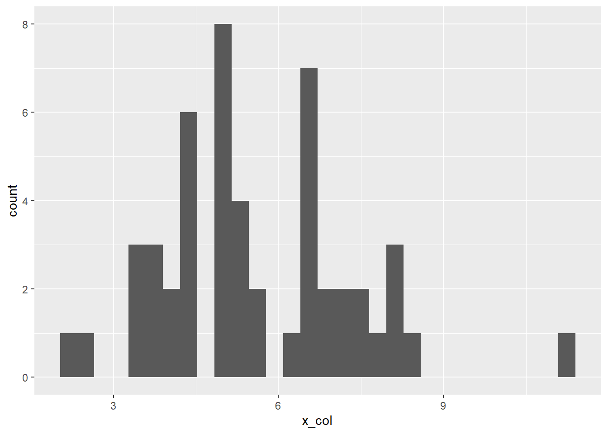
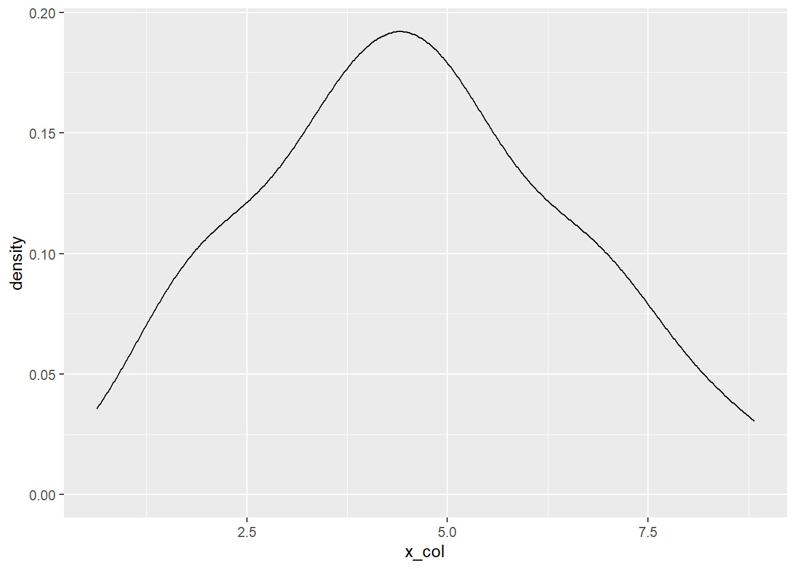
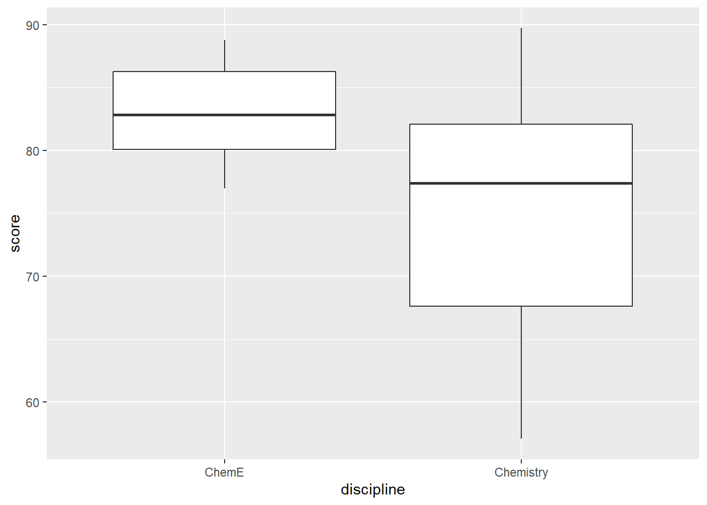
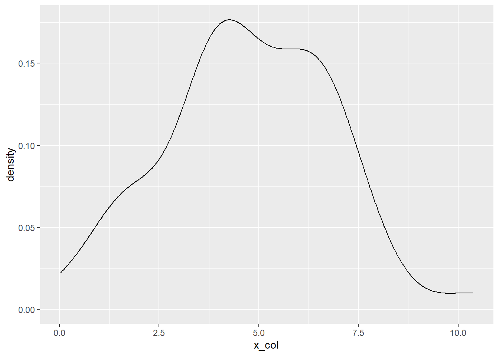
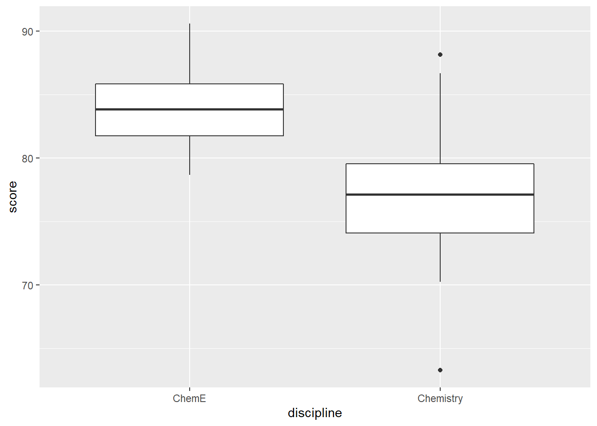
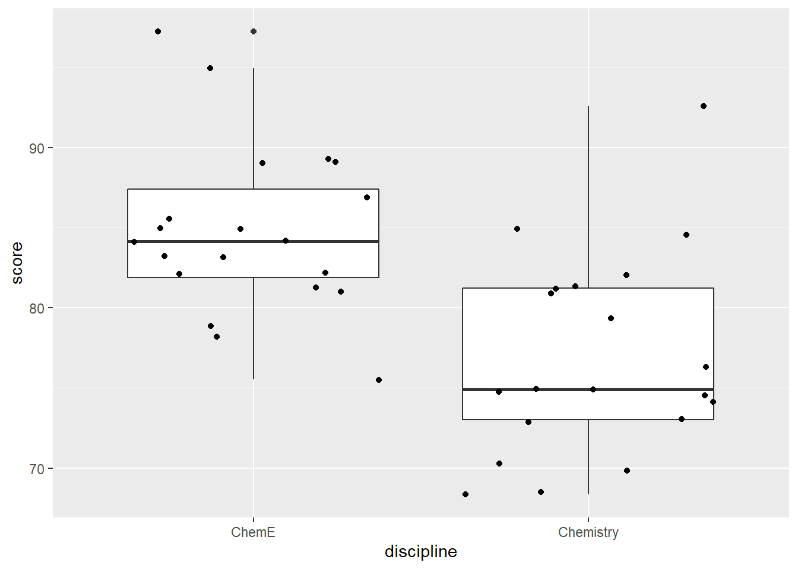

Chapter 4 Week 3 - Data Cleaning, Organizing, Describing, and Communicating
4.1 One continuous variable (either predictor or outcome variable)
num <- 50
mu <- 5
stdev <- 2
x <- rnorm(n = num, mean = mu, sd = stdev)
hist(x)You can also do this using ggplot rather than base R graphics
num <- 50
mu <- 5
stdev <- 2
x_vec <- rnorm(n = num, mean = mu, sd = stdev)
x_df <- tibble(x_col = x_vec)
ggplot(data = x_df, mapping = aes(x = x)) +
geom_histogram()## `stat_bin()` using `bins = 30`. Pick better value with `binwidth`.
You can use geom_density() instead of geom_histogram() to get a smooth graph
num <- 50
mu <- 5
stdev <- 2
x_vec <- rnorm(n = num, mean = mu, sd = stdev)
x_df <- tibble(x_col = x_vec)
ggplot(data = x_df, mapping = aes(x = x_col)) +
geom_density()
x_df %>%
ggplot(mapping = aes(x = x_col)) +
geom_density()
x_df %>%
ggplot(aes(x_col)) +
geom_density()
Just for fun, look at what happens to the the plot if you increase the sample size
num <- 5000
mu <- 5
stdev <- 2
x_vec <- rnorm(n = num, mean = mu, sd = stdev)
x_df <- tibble(x_col = x_vec)
ggplot(data = x_df, mapping = aes(x = x_col)) +
geom_density()
4.2 One Discrete Variable (either predictor or outcome)
## load in the data
survey_df <- read_csv("ENGE_5714_2021_pre_survey.csv")## Parsed with column specification:
## cols(
## .default = col_character(),
## student_id = col_double()
## )## See spec(...) for full column specifications.survey_df <- survey_df %>% clean_names()survey_df %>%
ggplot(aes(x = i_have_taken_a_quantitative_research_methods_course_before)) +
geom_bar()Notice that the ordering is not quite what we would want. It is alphabetical. Try to find how we can fix this.
Here is one way:
q_levels <- c("Strongly disagree", "Somewhat disagree", "Neither agree nor disagree",
"Somewhat agree", "Strongly agree")
survey_df$i_have_taken_a_quantitative_research_methods_course_before <- factor(survey_df$i_have_taken_a_quantitative_research_methods_course_before,
levels = q_levels,
ordered = TRUE)
## Now try plotting
survey_df %>%
ggplot(aes(x = i_have_taken_a_quantitative_research_methods_course_before)) +
geom_bar() +
coord_flip() +
labs(x = "I have taken a quantitative research methods course before",
y = "Count",
title = "Reordered Example")
4.2.1 Joining two datasets
Let’s imagine that we have a separate dataset that has information about the students who completed the pre-course prior knowledge survey.
First, we will load in that dataset
survey_info_df <- read_csv("survey_student_info.csv")## Parsed with column specification:
## cols(
## student_id = col_double(),
## standing = col_character(),
## college = col_character(),
## required = col_character()
## )Next, let’s join the two datasets based on the student id column, which is in each of the two dataframes.
survey_df <- survey_df %>% inner_join(survey_info_df, by = "student_id")Now we should have both datasets joined into one and saved as survey_df.
With this, we can make some nicer plots and do something like use facet_grid() to look at students who are masters and doctoral students, for example.
survey_df %>%
ggplot(aes(x = i_have_taken_a_quantitative_research_methods_course_before)) +
geom_bar() +
facet_grid(standing ~.) +
labs(x = "I have taken a quantitative research methods course before",
y = "Count",
title = "Reordered Example")
The x axis looks a little crowded. What if we try coord_flip()
survey_df %>%
filter(standing == "doctoral") %>%
ggplot(aes(x = i_have_taken_a_quantitative_research_methods_course_before)) +
geom_bar() +
coord_flip() +
facet_grid(standing ~.) +
labs(x = "I have taken a quantitative research methods course before",
y = "Count",
title = "Reordered Example")
A quick note on filters
survey_df %>% filter(required == "yes")## # A tibble: 12 x 52
## student_id i_have_taken_a_~ i_am_interested~ i_know_what_a_t~ i_know_what_a_t~ i_know_what_a_s~
## <dbl> <ord> <chr> <chr> <chr> <chr>
## 1 1 Somewhat disagr~ Somewhat agree Strongly disagr~ Strongly disagr~ Somewhat disagr~
## 2 2 Strongly disagr~ Neither agree n~ Somewhat agree Somewhat agree Somewhat agree
## 3 4 Somewhat disagr~ Strongly agree Strongly disagr~ Strongly disagr~ Somewhat agree
## 4 8 Somewhat agree Somewhat agree Somewhat agree Somewhat agree Somewhat agree
## 5 9 Strongly disagr~ Strongly agree Somewhat agree Somewhat agree Strongly agree
## 6 11 Strongly disagr~ Strongly agree Strongly disagr~ Strongly disagr~ Strongly disagr~
## 7 16 Strongly agree Strongly agree Somewhat agree Somewhat agree Somewhat agree
## 8 17 Strongly disagr~ Strongly agree Strongly disagr~ Strongly disagr~ Somewhat agree
## 9 18 Somewhat disagr~ Somewhat agree Somewhat disagr~ Somewhat disagr~ Somewhat agree
## 10 20 Strongly disagr~ Neither agree n~ Neither agree n~ Neither agree n~ Neither agree n~
## 11 22 Strongly disagr~ Strongly agree Strongly disagr~ Strongly disagr~ Somewhat disagr~
## 12 23 Somewhat agree Strongly agree Somewhat agree Somewhat agree Somewhat agree
## # ... with 46 more variables: i_know_what_a_p_value_is <chr>, i_know_what_p_hacking_means <chr>,
## # i_know_what_statistical_power_means <chr>, i_have_heard_of_frequentist_statistics_before <chr>,
## # i_have_heard_of_bayesian_statistics_before <chr>,
## # i_have_heard_the_term_parametric_statistics_before <chr>,
## # i_have_heard_the_term_non_parametric_statistics_before <chr>, i_know_what_a_histogram_is <chr>,
## # i_know_what_a_probability_distribution_is <chr>, i_know_what_a_random_variable_is <chr>,
## # i_know_what_a_probability_distribution_function_is <chr>,
## # i_know_what_a_cumulative_distribution_function_is <chr>,
## # i_know_what_the_expectation_of_a_random_variable_is <chr>,
## # i_know_how_to_calculate_the_variance_of_a_random_variable <chr>, i_know_what_a_z_score_is <chr>,
## # i_know_how_to_calculate_the_correlation_between_two_variables <chr>,
## # i_know_how_to_interpret_the_correlation_coefficient_between_two_variables <chr>,
## # i_have_heard_of_linear_regression <chr>,
## # i_know_how_to_run_a_linear_regression_in_some_software_or_by_hand_if_im_feeling_wild <chr>,
## # i_know_how_to_interpret_a_linear_regression <chr>, i_have_heard_of_multiple_regression <chr>,
## # i_know_how_to_perform_a_multiple_regression <chr>,
## # i_know_how_to_interpret_a_multiple_regression <chr>, i_have_heard_of_logistic_regression <chr>,
## # i_understand_when_to_use_a_logistic_regression <chr>,
## # i_know_how_to_interpret_the_results_of_a_logistic_regression <chr>, i_have_heard_of_t_tests <chr>,
## # i_have_performed_a_t_test_before <chr>, i_know_how_to_interpret_the_results_of_a_t_test <chr>,
## # i_have_heard_of_analysis_of_variance <chr>,
## # i_understand_when_to_run_an_analysis_of_variance_anova <chr>,
## # i_know_how_to_interpret_the_results_from_an_anova <chr>, i_have_heard_of_a_chi_square_test <chr>,
## # i_have_used_a_chi_square_test_before <chr>,
## # i_know_how_to_interpret_the_results_of_a_chi_square_test <chr>,
## # i_have_heard_of_cluster_analysis_before <chr>, i_have_used_cluster_analysis_before <chr>,
## # i_know_how_to_interpret_the_results_of_a_cluster_analysis <chr>,
## # i_have_heard_of_factor_analysis_either_exploratory_or_confirmatory <chr>,
## # i_have_used_factor_analysis_either_exploratory_or_confirmatory <chr>,
## # i_know_how_to_interpret_the_results_of_a_factor_analysis_either_exploratory_or_confirmatory <chr>,
## # i_already_have_r_and_rstudio_downloaded_to_my_computer <chr>, i_have_used_r_before <chr>,
## # standing <chr>, college <chr>, required <chr>filtered_df <- survey_df %>% filter(required == "yes")4.2.1.1 A little more about plotting
We are going to shift gears again and look at a few different kinds of plots. The main thing to remember here is that you want to think about whether the variables you have are nominal, ordinal, or continuous (that includes interval and ratio).
4.3 Discrete Predictor, Continuous Outcome
group_size <- 20
chem_e_scores <- rnorm(n = group_size, mean = 85, sd = 4)
chem_scores <- rnorm(n = group_size, mean = 78, sd = 6)
data_df <- tibble(
discipline = rep(c("ChemE", "Chemistry"), each = group_size),
score = c(chem_e_scores, chem_scores)
)
data_df %>%
ggplot(aes(x = discipline, y = score)) +
geom_boxplot()
You can make a few modifications to possibly make this easier to read.
The first is to put the discrete category on the y axis instead of the x axis.
The second is to use geom_jitter() in addition to geom_boxplot() to show the individual points in each group.
data_df %>%
ggplot(aes(y = score, x = discipline)) +
geom_boxplot() +
geom_jitter()
4.4 Continuous predictor and continuous outcome
First, let’s re-do a lot of the steps in this week’s script for reading in data and transforming it a little
mydata <- read_csv("Free Reduced Lunch by Schools and Grade Structures 2008-2017_final.csv")## Parsed with column specification:
## cols(
## .default = col_character(),
## div_num = col_double()
## )## See spec(...) for full column specifications.# check the structure of the data (this output is a bit long)
str(mydata)## tibble [2,101 x 137] (S3: spec_tbl_df/tbl_df/tbl/data.frame)
## $ sch_id : chr [1:2101] "001-0070" "001-0080" "001-0530" "001-0540" ...
## $ div_num : num [1:2101] 1 1 1 1 1 1 1 1 1 1 ...
## $ div_name : chr [1:2101] "Accomack County" "Accomack County" "Accomack County" "Accomack County" ...
## $ school_num : chr [1:2101] "0070<U+00A0>" "0080<U+00A0>" "0530<U+00A0>" "0540<U+00A0>" ...
## $ school_name : chr [1:2101] "NANDUA HIGH" "CHINCOTEAGUE ELEM" "TANGIER COMBINED" "ARCADIA HIGH" ...
## $ school_name2 : chr [1:2101] NA NA NA NA ...
## $ type0809 : chr [1:2101] "SCH-HIGH" "SCH-ELEM" "SCH-COMB" "SCH-HIGH" ...
## $ lowgrade_2008 : chr [1:2101] "9" "PK" "KG" "9" ...
## $ higrade_2008 : chr [1:2101] "12" "5" "12" "12" ...
## $ totalFT_2008 : chr [1:2101] "731" "263" "80" "638" ...
## $ total_2008 : chr [1:2101] "731" "263" "80" "638" ...
## $ snp_0809 : chr [1:2101] "659" "257" "80" "622" ...
## $ free_elig_0809: chr [1:2101] "306" "95" "38" "289" ...
## $ free_per_0809 : chr [1:2101] "46.43%" "36.96%" "47.50%" "46.46%" ...
## $ red_elig_0809 : chr [1:2101] "64" "8" "0" "56" ...
## $ red_per_0809 : chr [1:2101] "9.71%" "3.11%" "0.00%" "9.00%" ...
## $ totalFRL_0809 : chr [1:2101] "370" "103" "38" "345" ...
## $ totalper_0809 : chr [1:2101] "56.15%" "40.08%" "47.50%" "55.47%" ...
## $ type0910 : chr [1:2101] "SCH-HIGH" "SCH-ELEM" "SCH-COMB" "SCH-HIGH" ...
## $ lowgrade_2009 : chr [1:2101] "9" "PK" "KG" "9" ...
## $ higrade_2009 : chr [1:2101] "12" "5" "12" "12" ...
## $ totalFT_2009 : chr [1:2101] "654" "266" "78" "634" ...
## $ total_2009 : chr [1:2101] "654" "266" "78" "634" ...
## $ snp_0910 : chr [1:2101] "655" "266" "78" "635" ...
## $ free_elig_0910: chr [1:2101] "290" "99" "36" "286" ...
## $ free_per_0910 : chr [1:2101] "44.27%" "37.22%" "46.15%" "45.04%" ...
## $ red_elig_0910 : chr [1:2101] "37" "14" "0" "66" ...
## $ red_per_0910 : chr [1:2101] "5.65%" "5.26%" "0.00%" "10.39%" ...
## $ totalFRL_09010: chr [1:2101] "327" "113" "36" "352" ...
## $ totalper_0910 : chr [1:2101] "49.92%" "42.48%" "46.15%" "55.43%" ...
## $ type1011 : chr [1:2101] "SCH-HIGH" "SCH-ELEM" "SCH-COMB" "SCH-HIGH" ...
## $ lowgrade_2010 : chr [1:2101] "9" "PK" "KG" "9" ...
## $ higrade_2010 : chr [1:2101] "12" "5" "12" "12" ...
## $ totalFT_2010 : chr [1:2101] "603" "268" "74" "614" ...
## $ total_2010 : chr [1:2101] "603" "268" "74" "614" ...
## $ snp_1011 : chr [1:2101] "603" "277" "74" "606" ...
## $ free_elig_1011: chr [1:2101] "285" "108" "32" "308" ...
## $ free_per_1011 : chr [1:2101] "47.26%" "38.99%" "43.24%" "50.83%" ...
## $ red_elig_1011 : chr [1:2101] "46" "8" "0" "50" ...
## $ red_per_1011 : chr [1:2101] "7.63%" "2.89%" "0.00%" "8.25%" ...
## $ totalFRL_1011 : chr [1:2101] "331" "116" "32" "358" ...
## $ totalper_1011 : chr [1:2101] "54.89%" "41.88%" "43.24%" "59.08%" ...
## $ type1112 : chr [1:2101] "SCH-HIGH" "SCH-ELEM" "SCH-COMB" "SCH-HIGH" ...
## $ lowgrade_2011 : chr [1:2101] "9" "PK" "KG" "9" ...
## $ higrade_2011 : chr [1:2101] "12" "5" "12" "12" ...
## $ totalFT_2011 : chr [1:2101] "593" "276" "73" "605" ...
## $ total_2011 : chr [1:2101] "593" "276" "73" "605" ...
## $ snp_1112 : chr [1:2101] "593" "281" "73" "611" ...
## $ free_elig_1112: chr [1:2101] "289" "116" "31" "318" ...
## $ free_per_1112 : chr [1:2101] "48.74%" "41.28%" "42.47%" "52.05%" ...
## $ red_elig_1112 : chr [1:2101] "50" "14" "0" "44" ...
## $ red_per_1112 : chr [1:2101] "8.43%" "4.98%" "0.00%" "7.20%" ...
## $ totalFRL_1112 : chr [1:2101] "339" "130" "31" "362" ...
## $ totalper_1112 : chr [1:2101] "57.17%" "46.26%" "42.47%" "59.25%" ...
## $ type1213 : chr [1:2101] "SCH-HIGH" "SCH-ELEM" "SCH-COMB" "SCH-HIGH" ...
## $ lowgrade_2012 : chr [1:2101] "9" "PK" "KG" "9" ...
## $ higrade_2012 : chr [1:2101] "12" "5" "12" "12" ...
## $ totalFT_2012 : chr [1:2101] "637" "258" "68" "579" ...
## $ total_2012 : chr [1:2101] "637" "258" "68" "579" ...
## $ snp_1213 : chr [1:2101] "633" "259" "68" "579" ...
## $ free_elig_1213: chr [1:2101] "324" "117" "21" "348" ...
## $ free_per_1213 : chr [1:2101] "51.18%" "45.17%" "30.88%" "60.10%" ...
## $ red_elig_1213 : chr [1:2101] "42" "20" "5" "33" ...
## $ red_per_1213 : chr [1:2101] "6.64%" "7.72%" "7.35%" "5.70%" ...
## $ totalFRL_1213 : chr [1:2101] "366" "137" "26" "381" ...
## $ totalper_1213 : chr [1:2101] "57.82%" "52.90%" "38.24%" "65.80%" ...
## $ type1314 : chr [1:2101] "SCH-HIGH" "SCH-ELEM" "SCH-COMB" "SCH-HIGH" ...
## $ lowgrade_2013 : chr [1:2101] "9" "PK" "KG" "9" ...
## $ higrade_2013 : chr [1:2101] "12" "5" "12" "12" ...
## $ totalFT_2013 : chr [1:2101] "670" "238" "66" "582" ...
## $ total_2013 : chr [1:2101] "670" "238" "66" "582" ...
## $ snp_1314 : chr [1:2101] "668" "239" "56" "589" ...
## $ free_elig_1314: chr [1:2101] "346" "102" "12" "347" ...
## $ free_per_1314 : chr [1:2101] "51.80%" "42.68%" "21.43%" "58.91%" ...
## $ red_elig_1314 : chr [1:2101] "44" "19" "4" "54" ...
## $ red_per_1314 : chr [1:2101] "6.59%" "7.95%" "7.14%" "9.17%" ...
## $ totalFRL_1314 : chr [1:2101] "390" "121" "16" "401" ...
## $ totalper_1314 : chr [1:2101] "58.38%" "50.63%" "28.57%" "68.08%" ...
## $ type1415 : chr [1:2101] NA NA NA NA ...
## $ lowgrade_2014 : chr [1:2101] "9" "PK" "KG" "9" ...
## $ higrade_2014 : chr [1:2101] "12" "5" "12" "12" ...
## $ totalFT_2014 : chr [1:2101] "685" "251" "65" "581" ...
## $ total_2014 : chr [1:2101] "685" "251" "65" "581" ...
## $ snp_1415 : chr [1:2101] "672" "239" "61" "586" ...
## $ free_elig_1415: chr [1:2101] "361" "93" "14" "351" ...
## $ free_per_1415 : chr [1:2101] "53.72%" "38.91%" "22.95%" "59.90%" ...
## $ red_elig_1415 : chr [1:2101] "40" "17" "4" "40" ...
## $ red_per_1415 : chr [1:2101] "5.95%" "7.11%" "6.56%" "6.83%" ...
## $ totalFRL_1415 : chr [1:2101] "401" "110" "18" "391" ...
## $ totalper_1415 : chr [1:2101] "59.67%" "46.03%" "29.51%" "66.72%" ...
## $ CEP_1516 : chr [1:2101] "#NULL!" "#NULL!" "#NULL!" "#NULL!" ...
## $ type1516 : chr [1:2101] "SCH-HIGH" "SCH-ELEM" "SCH-COMB" "SCH-HIGH" ...
## $ lowgrade_2015 : chr [1:2101] "9" "PK" "KG" "9" ...
## $ higrade_2015 : chr [1:2101] "12" "5" "12" "12" ...
## $ totalFT_2015 : chr [1:2101] "737" "259" "65" "621" ...
## $ total_2015 : chr [1:2101] "737" "259" "65" "621" ...
## $ snp_1516 : chr [1:2101] "728" "268" "67" "608" ...
## $ free_elig_1516: chr [1:2101] "362" "109" "12" "339" ...
## $ free_per_1516 : chr [1:2101] "49.73%" "40.67%" "17.91%" "55.76%" ...
## [list output truncated]
## - attr(*, "spec")=
## .. cols(
## .. sch_id = col_character(),
## .. div_num = col_double(),
## .. div_name = col_character(),
## .. school_num = col_character(),
## .. school_name = col_character(),
## .. school_name2 = col_character(),
## .. type0809 = col_character(),
## .. lowgrade_2008 = col_character(),
## .. higrade_2008 = col_character(),
## .. totalFT_2008 = col_character(),
## .. total_2008 = col_character(),
## .. snp_0809 = col_character(),
## .. free_elig_0809 = col_character(),
## .. free_per_0809 = col_character(),
## .. red_elig_0809 = col_character(),
## .. red_per_0809 = col_character(),
## .. totalFRL_0809 = col_character(),
## .. totalper_0809 = col_character(),
## .. type0910 = col_character(),
## .. lowgrade_2009 = col_character(),
## .. higrade_2009 = col_character(),
## .. totalFT_2009 = col_character(),
## .. total_2009 = col_character(),
## .. snp_0910 = col_character(),
## .. free_elig_0910 = col_character(),
## .. free_per_0910 = col_character(),
## .. red_elig_0910 = col_character(),
## .. red_per_0910 = col_character(),
## .. totalFRL_09010 = col_character(),
## .. totalper_0910 = col_character(),
## .. type1011 = col_character(),
## .. lowgrade_2010 = col_character(),
## .. higrade_2010 = col_character(),
## .. totalFT_2010 = col_character(),
## .. total_2010 = col_character(),
## .. snp_1011 = col_character(),
## .. free_elig_1011 = col_character(),
## .. free_per_1011 = col_character(),
## .. red_elig_1011 = col_character(),
## .. red_per_1011 = col_character(),
## .. totalFRL_1011 = col_character(),
## .. totalper_1011 = col_character(),
## .. type1112 = col_character(),
## .. lowgrade_2011 = col_character(),
## .. higrade_2011 = col_character(),
## .. totalFT_2011 = col_character(),
## .. total_2011 = col_character(),
## .. snp_1112 = col_character(),
## .. free_elig_1112 = col_character(),
## .. free_per_1112 = col_character(),
## .. red_elig_1112 = col_character(),
## .. red_per_1112 = col_character(),
## .. totalFRL_1112 = col_character(),
## .. totalper_1112 = col_character(),
## .. type1213 = col_character(),
## .. lowgrade_2012 = col_character(),
## .. higrade_2012 = col_character(),
## .. totalFT_2012 = col_character(),
## .. total_2012 = col_character(),
## .. snp_1213 = col_character(),
## .. free_elig_1213 = col_character(),
## .. free_per_1213 = col_character(),
## .. red_elig_1213 = col_character(),
## .. red_per_1213 = col_character(),
## .. totalFRL_1213 = col_character(),
## .. totalper_1213 = col_character(),
## .. type1314 = col_character(),
## .. lowgrade_2013 = col_character(),
## .. higrade_2013 = col_character(),
## .. totalFT_2013 = col_character(),
## .. total_2013 = col_character(),
## .. snp_1314 = col_character(),
## .. free_elig_1314 = col_character(),
## .. free_per_1314 = col_character(),
## .. red_elig_1314 = col_character(),
## .. red_per_1314 = col_character(),
## .. totalFRL_1314 = col_character(),
## .. totalper_1314 = col_character(),
## .. type1415 = col_character(),
## .. lowgrade_2014 = col_character(),
## .. higrade_2014 = col_character(),
## .. totalFT_2014 = col_character(),
## .. total_2014 = col_character(),
## .. snp_1415 = col_character(),
## .. free_elig_1415 = col_character(),
## .. free_per_1415 = col_character(),
## .. red_elig_1415 = col_character(),
## .. red_per_1415 = col_character(),
## .. totalFRL_1415 = col_character(),
## .. totalper_1415 = col_character(),
## .. CEP_1516 = col_character(),
## .. type1516 = col_character(),
## .. lowgrade_2015 = col_character(),
## .. higrade_2015 = col_character(),
## .. totalFT_2015 = col_character(),
## .. total_2015 = col_character(),
## .. snp_1516 = col_character(),
## .. free_elig_1516 = col_character(),
## .. free_per_1516 = col_character(),
## .. red_elig_1516 = col_character(),
## .. red_Per_1516 = col_character(),
## .. totalFRL_1516 = col_character(),
## .. totalper_1516 = col_character(),
## .. CEP_1617 = col_character(),
## .. type1617 = col_character(),
## .. lowgrade_2016 = col_character(),
## .. higrade_2016 = col_character(),
## .. totalFT_2016 = col_character(),
## .. total_2016 = col_character(),
## .. snp_2016 = col_character(),
## .. free_elig_1617 = col_character(),
## .. free_per_1617 = col_character(),
## .. red_elig_1617 = col_character(),
## .. red_per_1617 = col_character(),
## .. totalFRL_1617 = col_character(),
## .. totalper_1617 = col_character(),
## .. CEP_1718 = col_character(),
## .. type1718 = col_character(),
## .. lowgrade_2017 = col_character(),
## .. higrade_2017 = col_character(),
## .. totalFT_2017 = col_character(),
## .. total_2017 = col_character(),
## .. snp_1718 = col_character(),
## .. free_elig_1718 = col_character(),
## .. free_per_1718 = col_character(),
## .. red_elig_1718 = col_character(),
## .. red_per_1718 = col_character(),
## .. totalFRL_1718 = col_character(),
## .. totalper_1718 = col_character(),
## .. stable = col_character(),
## .. new = col_character(),
## .. closed = col_character(),
## .. close_yr = col_character(),
## .. reuseid = col_character(),
## .. gradechg = col_character(),
## .. gradechg_yr = col_character(),
## .. grchgyr_2 = col_character()
## .. )str(mydata$total_2017)## chr [1:2101] "742" "236" "60" "624" "286" "485" "583" "550" "600" "514" "519" "468" "351" "264" ...NOTE: When you have a lot of variables, running this str() function is not a great idea - the output is a little too cumbersome
4.5 Mutating Variables
Note that almost all of the data reads in as a “character” data type which are just strings, This can create issues.
We know that many of the columns are actually storing numbers or “numeric” values as R refers to them. We need to fix this.
Let’s tell R that these columns (at least the two we are going to use) are numeric.
We are going to see two interchangeable ways to do this.
First, we use the $ operator which lets me specify a specific column within my data frame in combination with the as.numeric() function
mydata$total_2017<-as.numeric(mydata$total_2017)
mydata$totalFRL_1718<-as.numeric(mydata$totalFRL_1718)Some columns have a percent symbol, which you will need to remove before coercing to numeric data type
mydata <- mydata %>%
mutate(totalper_0809 = str_remove(totalper_0809, "%"))Then we can change the column from character to numeric
mydata$totalper_0809 <- as.numeric(mydata$totalper_0809)## Warning: NAs introduced by coercionCheck to make sure it converted the column type correctly using str().
str(mydata$totalper_0809)## num [1:2101] 56.1 40.1 47.5 55.5 33.4 ...Second, alternatively, we can do this for a whole set of variables at once. We just need to specify a matching criteria.
newdf <- mydata %>%
mutate_at(vars(starts_with("total")), as.numeric)## Warning in mask$eval_all_mutate(dots[[i]]): NAs introduced by coercion
## Warning in mask$eval_all_mutate(dots[[i]]): NAs introduced by coercion
## Warning in mask$eval_all_mutate(dots[[i]]): NAs introduced by coercion
## Warning in mask$eval_all_mutate(dots[[i]]): NAs introduced by coercion
## Warning in mask$eval_all_mutate(dots[[i]]): NAs introduced by coercion
## Warning in mask$eval_all_mutate(dots[[i]]): NAs introduced by coercion
## Warning in mask$eval_all_mutate(dots[[i]]): NAs introduced by coercion
## Warning in mask$eval_all_mutate(dots[[i]]): NAs introduced by coercion
## Warning in mask$eval_all_mutate(dots[[i]]): NAs introduced by coercion
## Warning in mask$eval_all_mutate(dots[[i]]): NAs introduced by coercion
## Warning in mask$eval_all_mutate(dots[[i]]): NAs introduced by coercion
## Warning in mask$eval_all_mutate(dots[[i]]): NAs introduced by coercion
## Warning in mask$eval_all_mutate(dots[[i]]): NAs introduced by coercion
## Warning in mask$eval_all_mutate(dots[[i]]): NAs introduced by coercion
## Warning in mask$eval_all_mutate(dots[[i]]): NAs introduced by coercion
## Warning in mask$eval_all_mutate(dots[[i]]): NAs introduced by coercion
## Warning in mask$eval_all_mutate(dots[[i]]): NAs introduced by coercion
## Warning in mask$eval_all_mutate(dots[[i]]): NAs introduced by coercion
## Warning in mask$eval_all_mutate(dots[[i]]): NAs introduced by coercion
## Warning in mask$eval_all_mutate(dots[[i]]): NAs introduced by coercion
## Warning in mask$eval_all_mutate(dots[[i]]): NAs introduced by coercion
## Warning in mask$eval_all_mutate(dots[[i]]): NAs introduced by coercion
## Warning in mask$eval_all_mutate(dots[[i]]): NAs introduced by coercion
## Warning in mask$eval_all_mutate(dots[[i]]): NAs introduced by coercion
## Warning in mask$eval_all_mutate(dots[[i]]): NAs introduced by coercion
## Warning in mask$eval_all_mutate(dots[[i]]): NAs introduced by coercion
## Warning in mask$eval_all_mutate(dots[[i]]): NAs introduced by coercion
## Warning in mask$eval_all_mutate(dots[[i]]): NAs introduced by coercion
## Warning in mask$eval_all_mutate(dots[[i]]): NAs introduced by coercion
## Warning in mask$eval_all_mutate(dots[[i]]): NAs introduced by coercion
## Warning in mask$eval_all_mutate(dots[[i]]): NAs introduced by coercion
## Warning in mask$eval_all_mutate(dots[[i]]): NAs introduced by coercion
## Warning in mask$eval_all_mutate(dots[[i]]): NAs introduced by coercion
## Warning in mask$eval_all_mutate(dots[[i]]): NAs introduced by coercion
## Warning in mask$eval_all_mutate(dots[[i]]): NAs introduced by coercion
## Warning in mask$eval_all_mutate(dots[[i]]): NAs introduced by coercion
## Warning in mask$eval_all_mutate(dots[[i]]): NAs introduced by coercionnewdf <- newdf %>%
mutate_at(vars(starts_with("totalFRL")), as.numeric)Check whether the old and new variables are stored differently (old as a character, new as a numeric variable)
str(mydata$total_2008)## chr [1:2101] "731" "263" "80" "638" "333" "536" "610" "490" "585" "450" "477" "502" "359" "187" ...str(newdf$total_2008)## num [1:2101] 731 263 80 638 333 536 610 490 585 450 ...4.6 Filtering and Selecting
A basic operation we do a lot is to filter the data so that we are working with a subset of all that we have.
We can do this with the filter() function, part of the dplyr package (in the tidyverse collection of packages).
Let’s say we want to look at the schools with div_num values less than 50.
newdf %>% filter(div_num < 50)## # A tibble: 800 x 137
## sch_id div_num div_name school_num school_name school_name2 type0809 lowgrade_2008 higrade_2008
## <chr> <dbl> <chr> <chr> <chr> <chr> <chr> <chr> <chr>
## 1 001-0~ 1 Accomac~ "0070\xa0" NANDUA HIGH <NA> SCH-HIGH 9 12
## 2 001-0~ 1 Accomac~ "0080\xa0" CHINCOTEAG~ <NA> SCH-ELEM PK 5
## 3 001-0~ 1 Accomac~ "0530\xa0" TANGIER CO~ <NA> SCH-COMB KG 12
## 4 001-0~ 1 Accomac~ "0540\xa0" ARCADIA HI~ <NA> SCH-HIGH 9 12
## 5 001-0~ 1 Accomac~ "0580\xa0" CHINCOTEAG~ <NA> SCH-COMB 6 12
## 6 001-0~ 1 Accomac~ "0590\xa0" PUNGOTEAGU~ <NA> SCH-ELEM PK 5
## 7 001-0~ 1 Accomac~ "0600\xa0" KEGOTANK E~ <NA> SCH-ELEM PK 5
## 8 001-0~ 1 Accomac~ "0701\xa0" ACCAWMACKE~ <NA> SCH-ELEM PK 5
## 9 001-0~ 1 Accomac~ "0702\xa0" METOMPKIN ~ <NA> SCH-ELEM PK 5
## 10 001-0~ 1 Accomac~ "0703\xa0" NANDUA MID~ <NA> SCH-MID 6 8
## # ... with 790 more rows, and 128 more variables: totalFT_2008 <dbl>, total_2008 <dbl>, snp_0809 <chr>,
## # free_elig_0809 <chr>, free_per_0809 <chr>, red_elig_0809 <chr>, red_per_0809 <chr>,
## # totalFRL_0809 <dbl>, totalper_0809 <dbl>, type0910 <chr>, lowgrade_2009 <chr>, higrade_2009 <chr>,
## # totalFT_2009 <dbl>, total_2009 <dbl>, snp_0910 <chr>, free_elig_0910 <chr>, free_per_0910 <chr>,
## # red_elig_0910 <chr>, red_per_0910 <chr>, totalFRL_09010 <dbl>, totalper_0910 <dbl>, type1011 <chr>,
## # lowgrade_2010 <chr>, higrade_2010 <chr>, totalFT_2010 <dbl>, total_2010 <dbl>, snp_1011 <chr>,
## # free_elig_1011 <chr>, free_per_1011 <chr>, red_elig_1011 <chr>, red_per_1011 <chr>,
## # totalFRL_1011 <dbl>, totalper_1011 <dbl>, type1112 <chr>, lowgrade_2011 <chr>, higrade_2011 <chr>,
## # totalFT_2011 <dbl>, total_2011 <dbl>, snp_1112 <chr>, free_elig_1112 <chr>, free_per_1112 <chr>,
## # red_elig_1112 <chr>, red_per_1112 <chr>, totalFRL_1112 <dbl>, totalper_1112 <dbl>, type1213 <chr>,
## # lowgrade_2012 <chr>, higrade_2012 <chr>, totalFT_2012 <dbl>, total_2012 <dbl>, snp_1213 <chr>,
## # free_elig_1213 <chr>, free_per_1213 <chr>, red_elig_1213 <chr>, red_per_1213 <chr>,
## # totalFRL_1213 <dbl>, totalper_1213 <dbl>, type1314 <chr>, lowgrade_2013 <chr>, higrade_2013 <chr>,
## # totalFT_2013 <dbl>, total_2013 <dbl>, snp_1314 <chr>, free_elig_1314 <chr>, free_per_1314 <chr>,
## # red_elig_1314 <chr>, red_per_1314 <chr>, totalFRL_1314 <dbl>, totalper_1314 <dbl>, type1415 <chr>,
## # lowgrade_2014 <chr>, higrade_2014 <chr>, totalFT_2014 <dbl>, total_2014 <dbl>, snp_1415 <chr>,
## # free_elig_1415 <chr>, free_per_1415 <chr>, red_elig_1415 <chr>, red_per_1415 <chr>,
## # totalFRL_1415 <dbl>, totalper_1415 <dbl>, CEP_1516 <chr>, type1516 <chr>, lowgrade_2015 <chr>,
## # higrade_2015 <chr>, totalFT_2015 <dbl>, total_2015 <dbl>, snp_1516 <chr>, free_elig_1516 <chr>,
## # free_per_1516 <chr>, red_elig_1516 <chr>, red_Per_1516 <chr>, totalFRL_1516 <dbl>,
## # totalper_1516 <dbl>, CEP_1617 <chr>, type1617 <chr>, lowgrade_2016 <chr>, higrade_2016 <chr>,
## # totalFT_2016 <dbl>, total_2016 <dbl>, ...Or, if we want to look at schools where the highest grade in 2008 was grade five, we can try:
newdf %>% filter(higrade_2008 == "5") # this returns a subsetted dataframe with 878 rows## # A tibble: 878 x 137
## sch_id div_num div_name school_num school_name school_name2 type0809 lowgrade_2008 higrade_2008
## <chr> <dbl> <chr> <chr> <chr> <chr> <chr> <chr> <chr>
## 1 001-0~ 1 Accomac~ "0080\xa0" CHINCOTEAG~ <NA> SCH-ELEM PK 5
## 2 001-0~ 1 Accomac~ "0590\xa0" PUNGOTEAGU~ <NA> SCH-ELEM PK 5
## 3 001-0~ 1 Accomac~ "0600\xa0" KEGOTANK E~ <NA> SCH-ELEM PK 5
## 4 001-0~ 1 Accomac~ "0701\xa0" ACCAWMACKE~ <NA> SCH-ELEM PK 5
## 5 001-0~ 1 Accomac~ "0702\xa0" METOMPKIN ~ <NA> SCH-ELEM PK 5
## 6 002-0~ 2 Albemar~ "0010\xa0" HOLLYMEAD ~ <NA> SCH-ELEM PK 5
## 7 002-0~ 2 Albemar~ "0030\xa0" SCOTTSVILL~ <NA> SCH-ELEM PK 5
## 8 002-0~ 2 Albemar~ "0040\xa0" MARY CARR ~ <NA> SCH-ELEM PK 5
## 9 002-0~ 2 Albemar~ "0100\xa0" BROADUS WO~ <NA> SCH-ELEM PK 5
## 10 002-0~ 2 Albemar~ "0150\xa0" PAUL H CAL~ <NA> SCH-ELEM PK 5
## # ... with 868 more rows, and 128 more variables: totalFT_2008 <dbl>, total_2008 <dbl>, snp_0809 <chr>,
## # free_elig_0809 <chr>, free_per_0809 <chr>, red_elig_0809 <chr>, red_per_0809 <chr>,
## # totalFRL_0809 <dbl>, totalper_0809 <dbl>, type0910 <chr>, lowgrade_2009 <chr>, higrade_2009 <chr>,
## # totalFT_2009 <dbl>, total_2009 <dbl>, snp_0910 <chr>, free_elig_0910 <chr>, free_per_0910 <chr>,
## # red_elig_0910 <chr>, red_per_0910 <chr>, totalFRL_09010 <dbl>, totalper_0910 <dbl>, type1011 <chr>,
## # lowgrade_2010 <chr>, higrade_2010 <chr>, totalFT_2010 <dbl>, total_2010 <dbl>, snp_1011 <chr>,
## # free_elig_1011 <chr>, free_per_1011 <chr>, red_elig_1011 <chr>, red_per_1011 <chr>,
## # totalFRL_1011 <dbl>, totalper_1011 <dbl>, type1112 <chr>, lowgrade_2011 <chr>, higrade_2011 <chr>,
## # totalFT_2011 <dbl>, total_2011 <dbl>, snp_1112 <chr>, free_elig_1112 <chr>, free_per_1112 <chr>,
## # red_elig_1112 <chr>, red_per_1112 <chr>, totalFRL_1112 <dbl>, totalper_1112 <dbl>, type1213 <chr>,
## # lowgrade_2012 <chr>, higrade_2012 <chr>, totalFT_2012 <dbl>, total_2012 <dbl>, snp_1213 <chr>,
## # free_elig_1213 <chr>, free_per_1213 <chr>, red_elig_1213 <chr>, red_per_1213 <chr>,
## # totalFRL_1213 <dbl>, totalper_1213 <dbl>, type1314 <chr>, lowgrade_2013 <chr>, higrade_2013 <chr>,
## # totalFT_2013 <dbl>, total_2013 <dbl>, snp_1314 <chr>, free_elig_1314 <chr>, free_per_1314 <chr>,
## # red_elig_1314 <chr>, red_per_1314 <chr>, totalFRL_1314 <dbl>, totalper_1314 <dbl>, type1415 <chr>,
## # lowgrade_2014 <chr>, higrade_2014 <chr>, totalFT_2014 <dbl>, total_2014 <dbl>, snp_1415 <chr>,
## # free_elig_1415 <chr>, free_per_1415 <chr>, red_elig_1415 <chr>, red_per_1415 <chr>,
## # totalFRL_1415 <dbl>, totalper_1415 <dbl>, CEP_1516 <chr>, type1516 <chr>, lowgrade_2015 <chr>,
## # higrade_2015 <chr>, totalFT_2015 <dbl>, total_2015 <dbl>, snp_1516 <chr>, free_elig_1516 <chr>,
## # free_per_1516 <chr>, red_elig_1516 <chr>, red_Per_1516 <chr>, totalFRL_1516 <dbl>,
## # totalper_1516 <dbl>, CEP_1617 <chr>, type1617 <chr>, lowgrade_2016 <chr>, higrade_2016 <chr>,
## # totalFT_2016 <dbl>, total_2016 <dbl>, ...Note that we had to set it equal to the character value “5” rather than the numeric value 5. Why?
If we wanted to filter on numeric values instead, we would want to do something like this:
newdf %>%
mutate(higrade_2008 = as.numeric(higrade_2008)) %>%
filter(higrade_2008 == 5) # again, this returns a subsetted dataframe with 878 rows## Warning in mask$eval_all_mutate(dots[[i]]): NAs introduced by coercion## # A tibble: 878 x 137
## sch_id div_num div_name school_num school_name school_name2 type0809 lowgrade_2008 higrade_2008
## <chr> <dbl> <chr> <chr> <chr> <chr> <chr> <chr> <dbl>
## 1 001-0~ 1 Accomac~ "0080\xa0" CHINCOTEAG~ <NA> SCH-ELEM PK 5
## 2 001-0~ 1 Accomac~ "0590\xa0" PUNGOTEAGU~ <NA> SCH-ELEM PK 5
## 3 001-0~ 1 Accomac~ "0600\xa0" KEGOTANK E~ <NA> SCH-ELEM PK 5
## 4 001-0~ 1 Accomac~ "0701\xa0" ACCAWMACKE~ <NA> SCH-ELEM PK 5
## 5 001-0~ 1 Accomac~ "0702\xa0" METOMPKIN ~ <NA> SCH-ELEM PK 5
## 6 002-0~ 2 Albemar~ "0010\xa0" HOLLYMEAD ~ <NA> SCH-ELEM PK 5
## 7 002-0~ 2 Albemar~ "0030\xa0" SCOTTSVILL~ <NA> SCH-ELEM PK 5
## 8 002-0~ 2 Albemar~ "0040\xa0" MARY CARR ~ <NA> SCH-ELEM PK 5
## 9 002-0~ 2 Albemar~ "0100\xa0" BROADUS WO~ <NA> SCH-ELEM PK 5
## 10 002-0~ 2 Albemar~ "0150\xa0" PAUL H CAL~ <NA> SCH-ELEM PK 5
## # ... with 868 more rows, and 128 more variables: totalFT_2008 <dbl>, total_2008 <dbl>, snp_0809 <chr>,
## # free_elig_0809 <chr>, free_per_0809 <chr>, red_elig_0809 <chr>, red_per_0809 <chr>,
## # totalFRL_0809 <dbl>, totalper_0809 <dbl>, type0910 <chr>, lowgrade_2009 <chr>, higrade_2009 <chr>,
## # totalFT_2009 <dbl>, total_2009 <dbl>, snp_0910 <chr>, free_elig_0910 <chr>, free_per_0910 <chr>,
## # red_elig_0910 <chr>, red_per_0910 <chr>, totalFRL_09010 <dbl>, totalper_0910 <dbl>, type1011 <chr>,
## # lowgrade_2010 <chr>, higrade_2010 <chr>, totalFT_2010 <dbl>, total_2010 <dbl>, snp_1011 <chr>,
## # free_elig_1011 <chr>, free_per_1011 <chr>, red_elig_1011 <chr>, red_per_1011 <chr>,
## # totalFRL_1011 <dbl>, totalper_1011 <dbl>, type1112 <chr>, lowgrade_2011 <chr>, higrade_2011 <chr>,
## # totalFT_2011 <dbl>, total_2011 <dbl>, snp_1112 <chr>, free_elig_1112 <chr>, free_per_1112 <chr>,
## # red_elig_1112 <chr>, red_per_1112 <chr>, totalFRL_1112 <dbl>, totalper_1112 <dbl>, type1213 <chr>,
## # lowgrade_2012 <chr>, higrade_2012 <chr>, totalFT_2012 <dbl>, total_2012 <dbl>, snp_1213 <chr>,
## # free_elig_1213 <chr>, free_per_1213 <chr>, red_elig_1213 <chr>, red_per_1213 <chr>,
## # totalFRL_1213 <dbl>, totalper_1213 <dbl>, type1314 <chr>, lowgrade_2013 <chr>, higrade_2013 <chr>,
## # totalFT_2013 <dbl>, total_2013 <dbl>, snp_1314 <chr>, free_elig_1314 <chr>, free_per_1314 <chr>,
## # red_elig_1314 <chr>, red_per_1314 <chr>, totalFRL_1314 <dbl>, totalper_1314 <dbl>, type1415 <chr>,
## # lowgrade_2014 <chr>, higrade_2014 <chr>, totalFT_2014 <dbl>, total_2014 <dbl>, snp_1415 <chr>,
## # free_elig_1415 <chr>, free_per_1415 <chr>, red_elig_1415 <chr>, red_per_1415 <chr>,
## # totalFRL_1415 <dbl>, totalper_1415 <dbl>, CEP_1516 <chr>, type1516 <chr>, lowgrade_2015 <chr>,
## # higrade_2015 <chr>, totalFT_2015 <dbl>, total_2015 <dbl>, snp_1516 <chr>, free_elig_1516 <chr>,
## # free_per_1516 <chr>, red_elig_1516 <chr>, red_Per_1516 <chr>, totalFRL_1516 <dbl>,
## # totalper_1516 <dbl>, CEP_1617 <chr>, type1617 <chr>, lowgrade_2016 <chr>, higrade_2016 <chr>,
## # totalFT_2016 <dbl>, total_2016 <dbl>, ...4.7 Grouping and Summarizing
Let’s shift gears to a different combination of operations…
Let’s go ahead and try using tidyverse to narrow to what we want. Imagine we want to see the county level aggregate numbers for FRL in the 2017-2018 school year.
We will start out with our entire data frame and then use pipes (the %>% operator) to work from there. The final result will be stored in our new data frame that we are creating, called county_level_aggregate.
First, select will pick columns Next, group_by and summarize work together to get us our aggregate totals.
county_level_aggregate <- newdf %>%
select(div_name, total_2017, totalFRL_1718) %>%
group_by(div_name) %>%
summarize(totalstudents = sum(total_2017),
totalFRL = sum(totalFRL_1718))## `summarise()` ungrouping output (override with `.groups` argument)Now, we can compute percentages if we like and we can specify a new column by referring to. One that doesn’t exist yet but will after we run this code. We will do this two interchangeable ways.
First, the old school way:
county_level_aggregate$percent_FRL <- county_level_aggregate$totalFRL/county_level_aggregate$totalstudents*100Second, the tidyverse way:
county_level_aggregate <- county_level_aggregate %>%
mutate(percent_frl = totalFRL / totalstudents * 100)Just for fun, let’s see how this could have been incorporated into our summarize call
county_level_percents <- newdf %>%
select(div_name, total_2017, totalFRL_1718) %>%
group_by(div_name) %>%
summarize(percentFRL=sum(totalFRL_1718)/sum(total_2017) * 100)## `summarise()` ungrouping output (override with `.groups` argument)Something is going to look weird with this plot
newdf %>%
ggplot(aes(totalFRL_0809, totalFT_2008)) +
geom_point() +
labs(title = "FRL 2008", x = "totalFRL_0809")## Warning: Removed 236 rows containing missing values (geom_point).Let’s see if we can fix it
newdf %>%
filter(!is.na(totalFRL_0809)) %>%
ggplot(aes(totalFRL_0809, totalFT_2008)) +
geom_point() +
labs(title = "FRL 2008",
x = "totalFRL_0809") +
xlim(0, 1000) +
ylim(0, 1000)## Warning: Removed 324 rows containing missing values (geom_point).